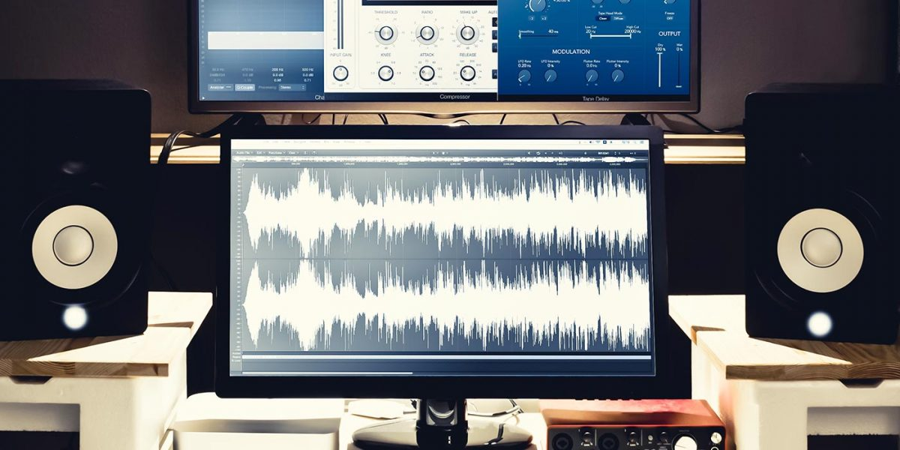

📌 ¿Qué es?

El audio digital es el sonido representado en formato binario (ceros y unos) que las computadoras y dispositivos electrónicos pueden almacenar, reproducir y procesar. Se obtiene digitalizando el sonido analógico, que es continuo en el tiempo. El sistema auditivo humano es el conjunto de órganos y estructuras que nos permiten percibir, transmitir e interpretar los sonidos. Convierte las ondas sonoras en impulsos nerviosos que el cerebro reconoce como voces, música, ruidos, etc.
📌 Cómo se convierte el sonido en digital
Captura: un micrófono convierte las ondas sonoras en señales eléctricas. Muestreo (sampling): se toman muestras de la señal a intervalos regulares (frecuencia de muestreo). Ejemplo: 44.1 kHz → 44,100 muestras por segundo (estándar CD). Cuantización: cada muestra se asigna a un valor numérico según su amplitud. Codificación: los valores numéricos se almacenan en bits (profundidad de bits, 16, 24, etc.)
Frecuencia de muestreo: determina el rango de frecuencias que se pueden representar. Profundidad de bits: determina la precisión de cada muestra y la calidad del sonido. Canales: mono (1 canal), estéreo (2 canales), surround (5.1 o 7.1 canales). Compresión: Con pérdida (MP3, AAC) → menor tamaño, pérdida de información. Sin pérdida (WAV, FLAC) → mayor tamaño, calidad completa.
📌 Formatos de audio digital más comunes
MP3: comprimido con pérdida, muy usado en música y dispositivos portátiles. WAV: sin compresión, calidad completa, usado en estudios de grabación. FLAC: sin pérdida, comprimido, mantiene alta calidad. AAC: mejora al MP3 en compresión y calidad, usado en Apple y streaming. OGG: abierto y comprimido, usado en videojuegos y aplicaciones libres.
📌 Formatos de audio digital más comunes
MP3: comprimido con pérdida, muy usado en música y dispositivos portátiles. WAV: sin compresión, calidad completa, usado en estudios de grabación. FLAC: sin pérdida, comprimido, mantiene alta calidad. AAC: mejora al MP3 en compresión y calidad, usado en Apple y streaming. OGG: abierto y comprimido, usado en videojuegos y aplicaciones libres.
📌 Ventajas del audio digital
Fácil de almacenar y compartir en dispositivos. Permite edición avanzada: cortar, mezclar, aplicar efectos. No se degrada con copias sucesivas (a diferencia del analógico). Compatible con multimedia y sistemas informáticos.